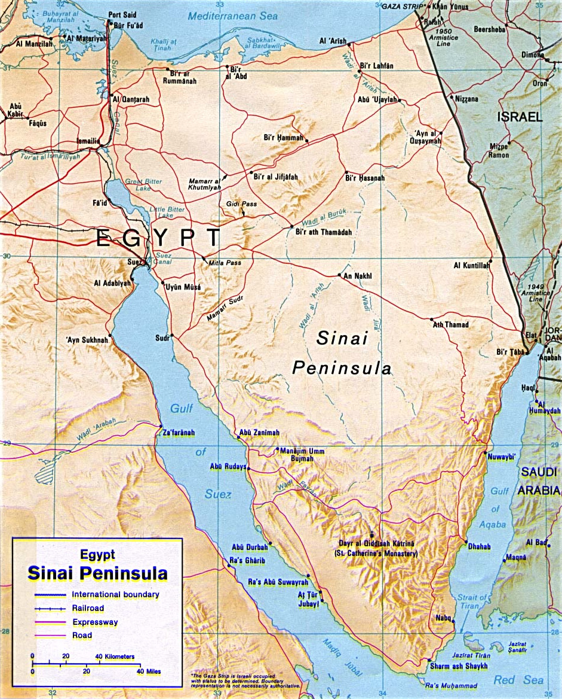
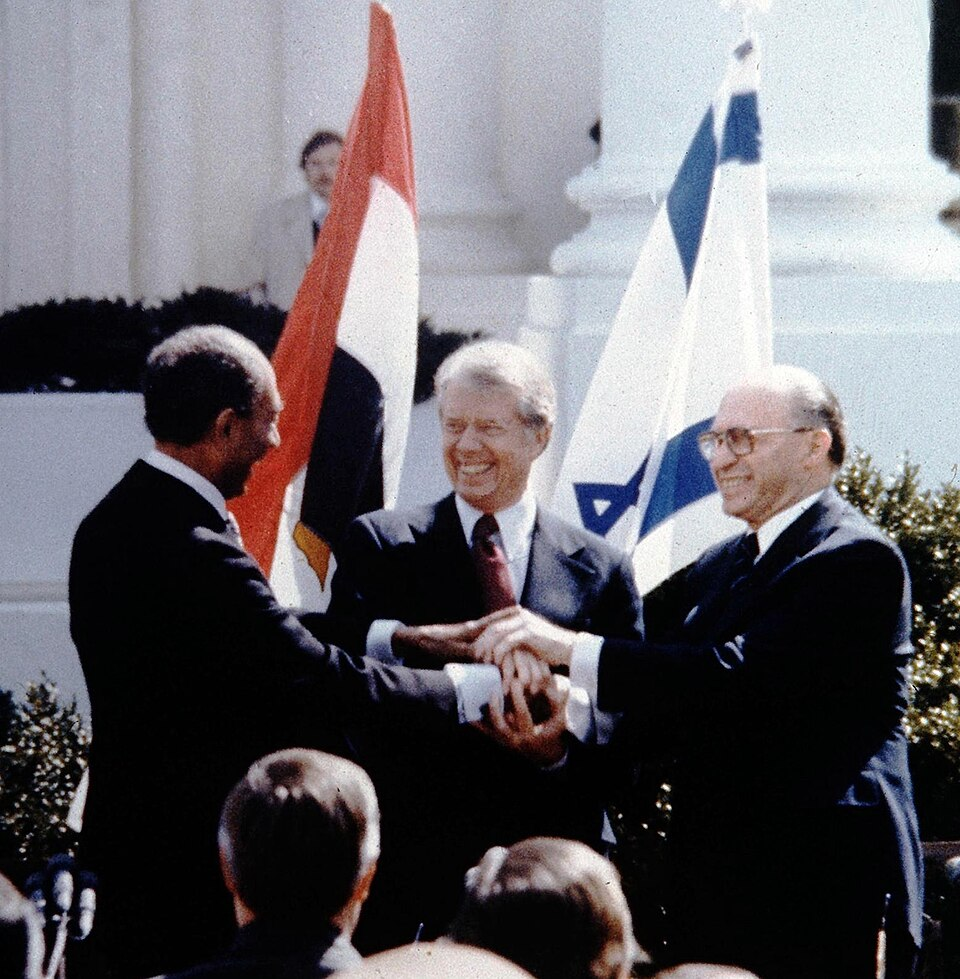
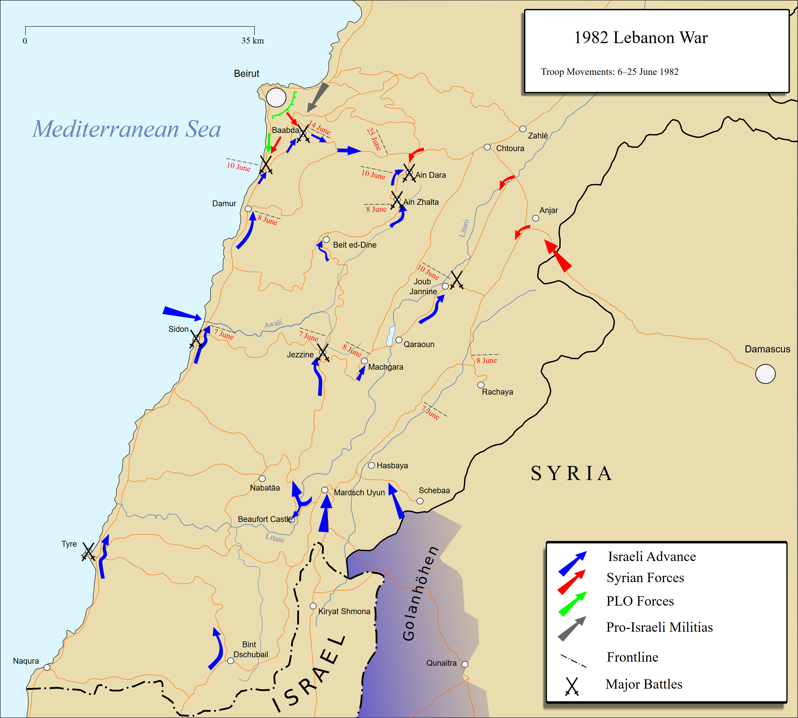
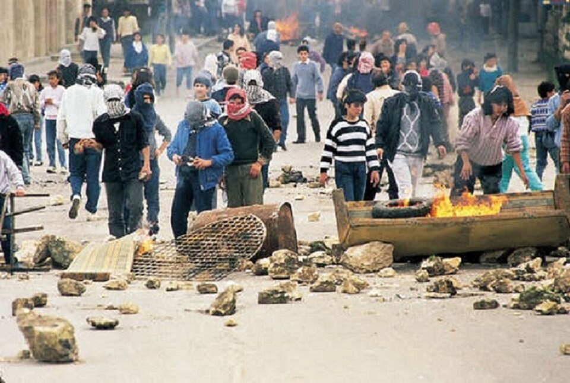
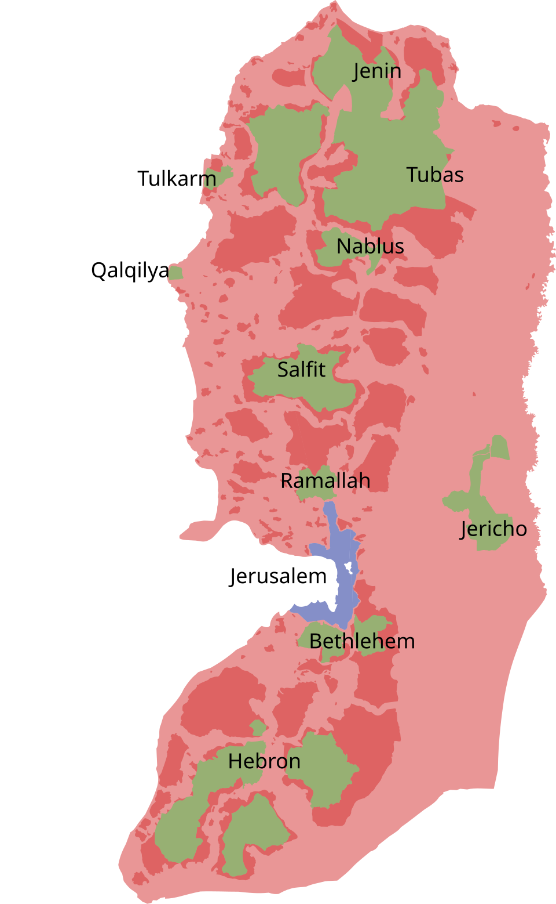
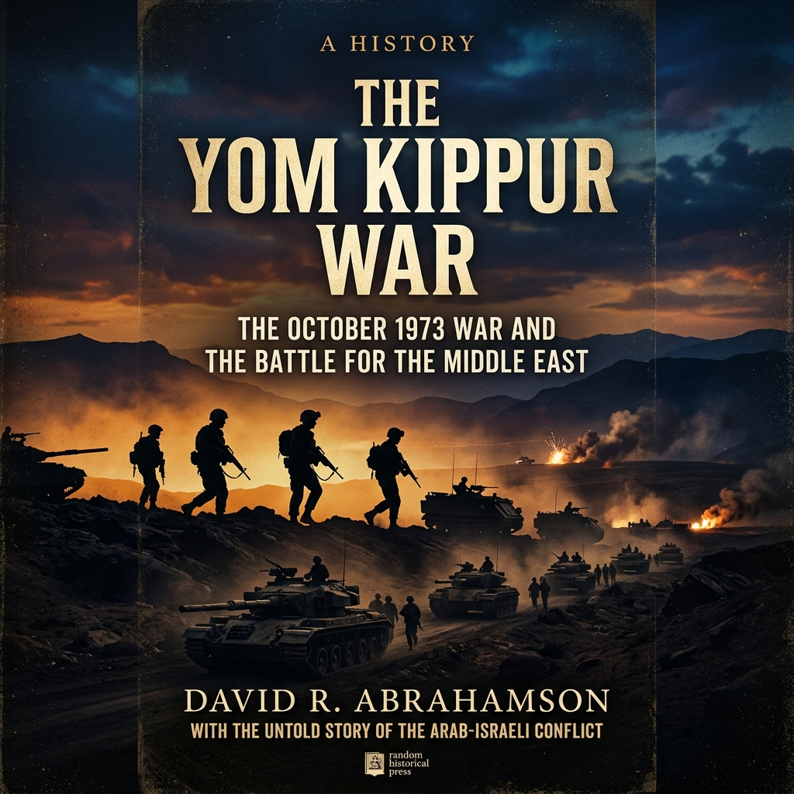

Edexcel GCSE (9–1) History • Option 26/27
Conflict in the Middle East
1945–1995
Key Topic 3: Attempts at a solution, 1974–95

David Ben-Gurion reads the Declaration of Independence beneath the portrait of Theodor
Herzl (Tel Aviv, 14 May 1948).
Official Course Textbook
Enquiry: “Why has peace proved so elusive in the Middle
East?”
Contents
|
Lesson 1: KT 3.1: Diplomatic Negotiations: From Shuttle Diplomacy to Camp David,
1974–1979
|
Page 2
|
|
Lesson 2: KT 3.2: The Palestinian Issue: Lebanon, Sabra & Shatila, and the First
Intifada, 1974–1993
|
Page 11
|
|
Lesson 3: KT 3.3: Attempts at a Solution: From the Oslo Accords to Oslo II, 1988–1995
|
Page 25
|
L1: KT 3.1: Diplomatic Negotiations: From Shuttle Diplomacy to Camp David, 1974–1979[[SRC_MARKER:L7_Start]]
Learning Objectives
Understand the significance of the oil crisis and the involvement of the USA and the USSR.
Analyze Kissinger, ‘shuttle diplomacy’ and the reopening of the Suez Canal.
Evaluate Sadat’s visit to Israel (1977), Begin’s visit to Egypt (1977), US President
Carter and Camp David (1978) and the Treaty of Washington (1979).
In an unprecedented move that stunned the world, Egyptian President Anwar Sadat traveled to
Jerusalem in 1977, offering peace. This bold step shattered the Arab taboo of refusing to talk
to Israel and paved the way for the historic Camp David Accords, fundamentally altering the
Middle East peace process.
Did you know?
-
Camp David Accords (1978): Brokered by US President Jimmy Carter, leading to the first
peace treaty between Israel and an Arab nation.
-
Sinai Return: Israel agreed to return the entire Sinai Peninsula to Egypt in exchange for
full diplomatic recognition.
-
Assassination: Sadat was viewed as a traitor by many Arabs and was assassinated by Islamic
extremists in 1981.
Source A: President Anwar Sadat Addresses the Israeli Knesset (20 November 1977)
Primary Photograph: Egyptian President Anwar Sadat speaking at the podium of the Israeli
Knesset in Jerusalem on 20 November 1977.
Q1. Study Source A. Why was President Sadat's historic speech to the Israeli parliament
in Jerusalem considered an astonishing psychological and diplomatic breakthrough for
Middle East peace?
Recall & Retrieval (Lesson 7: Yom Kippur War & Aftermath)
1. On what Jewish holy day did Egypt and Syria launch their surprise
attack in October 1973?
2. What weapon technology did Egyptian forces use to breach the sand
ramparts of the Bar-Lev Line in 1973?
3. What action taken by Arab oil-producing states (OPEC) during the
1973 war caused a global economic crisis?
4. Who was the US Secretary of State who pioneered 'shuttle diplomacy'
between Middle Eastern capitals in 1974–75?
5. What was the massive sand fortification line built by Israel along
the eastern bank of the Suez Canal after 1967?
6. Which Israeli general led the armoured counter-crossing of the Suez
Canal into Egypt in mid-October 1973?
7. What United Nations resolution passed on 22 October 1973 brought
about a ceasefire in the Yom Kippur War?
8. Who was Israel's Prime Minister during the Yom Kippur War who faced
severe domestic criticism for intelligence failures?
9. Which superpower enacted a massive military airlift (Operation
Nickel Grass) to resupply Israel with tanks and ammunition?
10. Who succeeded Gamal Abdel Nasser as President of Egypt in September
1970?
Vocabulary Check
The Odd One Out: Select THREE terms that share a close historical
connection. Identify which ONE remaining term is the 'Odd One Out' in this lesson, and
explain your historical reasoning:
OPEC | Shuttle Diplomacy | Likud | Camp David
Accords | Treaty of Washington
Teacher Model / Pupil Reasoning:
The Geopolitical Shock of 1973 & The OPEC Oil Embargo: The Yom Kippur War of
October 1973 was a military conflict that triggered a global economic and geopolitical
revolution. Alarmed by the massive US arms airlift to Israel (Operation Nickel Grass), the
Arab members of OPEC (Organization of the Petroleum Exporting Countries), led by King Faisal
of Saudi Arabia, enacted the "Oil Weapon." They placed a total oil embargo on the United
States, Denmark, and the Netherlands, while cutting production for other Western nations by
25%. This move had a devastating, cascading impact on the global economy. The price of crude
oil quadrupled in a matter of months, skyrocketing from $3 to $12 a barrel. Western industrial
nations, highly dependent on cheap oil, plunged into a deep economic crisis characterized by
soaring inflation and high unemployment. For the United States, the crisis demonstrated that
resolving the Arab-Israeli conflict was no longer just a moral or regional issue, but an
existential prerequisite for Western economic stability.
The Siege of Beirut & The Expulsion of the PLO to Tunisia:

Henry Kissinger’s "Shuttle Diplomacy" (1974–1975): The Yom Kippur War had
brought the United States and the Soviet Union to the brink of nuclear confrontation. US
Secretary of State Henry Kissinger seized the opportunity to pioneer a new diplomatic
strategy: "shuttle diplomacy." Flying back and forth between Cairo, Damascus, and Tel Aviv for
two months, Kissinger acted as a neutral intermediary between leaders who still refused to sit
in the same room. Kissinger recognized that trying to achieve a comprehensive, all-at-once
peace treaty was impossible; instead, he pursued "step-by-step diplomacy," negotiating
practical, limited disengagement agreements that reduced tensions and separated hostile
armies.
The Kahan Commission: Domestic Israeli Backlash & Sharon’s Resignation:

The Disengagement Accords & The Suez Reopened (1974–1975): Kissinger’s
relentless shuttle diplomacy produced three landmark agreements:
-
Sinai I (January 1974): Israeli forces withdrew 20 miles east of the Suez
Canal, allowing Egypt to regain control of both banks of the canal, separated by a UN
buffer zone.
-
The Syrian Disengagement Accord (May 1974): Brokered a ceasefire line on
the Golan Heights, with Israel returning the destroyed provincial capital of Quneitra to
Syria under UN observer supervision.
-
Sinai II (September 1975): Israel withdrew further into Sinai,
surrendering the strategic Gidi and Mitla passes and the vital Abu Rudeis oil fields to
Egypt in exchange for US-manned electronic monitoring stations and $2 billion in annual US
aid.
A direct, triumphant consequence of these accords was that the
Suez reopened on 5 June 1975. Blocked since the 1967 war by scuttled ships,
unexploded ordnance, and sea mines, the canal was painstakingly cleared by multinational naval
forces. On 5 June 1975—exactly eight years to the day after its closure in 1967—President
Anwar Sadat sailed aboard an Egyptian destroyer to officially declare the Suez reopened to
international maritime commerce, providing an immediate financial lifeline to Egypt’s
exhausted economy.
[[SRC_MARKER:L7_Task_4_0]]Q2. How did Henry Kissinger's 'shuttle diplomacy' and the Sinai Disengagement
Agreements (1974–75) lay the foundation for peace between Egypt and Israel?
[[SRC_MARKER:L7_Source_7]]
Source B: Begin, Carter, and Sadat at the Camp David Summit (September 1978)
US President Jimmy Carter joins hands with Israeli Prime Minister Menachem Begin and
Egyptian President Anwar Sadat following 13 days of secluded negotiations at Camp David.
Q3. Study Source B. Why was US President Jimmy Carter's personal mediation at Camp David
indispensable in brokering a compromise between Menachem Begin and Anwar Sadat?
The Election of Menachem Begin & The Likud Government (May 1977): In May
1977, the political landscape of Israel experienced a historic earthquake. For the first time
in Israel’s 29-year history, the socialist Labour Party was voted out of power, replaced by
the right-wing Likud coalition headed by Menachem Begin—the former commander
of the underground Irgun. Begin was an ardent nationalist who believed passionately in the
biblical "Greater Land of Israel" (Eretz Israel), viewing the West Bank (which he
called by its biblical names, Judea and Samaria) as an inalienable part of the Jewish
homeland. International observers feared that Begin’s election had permanently ended all
prospects for Middle Eastern peace.

Sadat’s Dramatic Gamble: The Historic Knesset Speech (November 1977): Facing
severe economic riots in Cairo and frustrated by the glacial pace of multilateral talks, Anwar
Sadat made one of the most audacious diplomatic gambles in modern history. On 9 November 1977,
in an address to the Egyptian Parliament, Sadat casually remarked:
"I am ready to go to the end of the world, and Israel will be astonished to hear me say
that I am ready to go to their home, to the Knesset itself, and argue with them."
Prime Minister Begin immediately issued a formal state invitation. On 19 November 1977,
Sadat's presidential jet touched down at Ben Gurion Airport, and Sadat stepped onto Israeli
soil—becoming the first Arab leader ever to visit the Jewish state. Standing before the
Israeli parliament in his famous
Knesset speech, Sadat shattered 30 years of
psychological barriers:
"I have come to you so that together we might build a durable peace based on justice... We
used to reject you... but today I tell you, and I say it to the whole world, that we accept
to live with you in permanent peace based on justice. No more war, no more bloodshed!"
[[SRC_MARKER:L7_Task_7_0]]Q4. What historic gamble did Anwar Sadat take on 19 November 1977, and why did it break
the diplomatic deadlock?
[[SRC_MARKER:L7_Source_11]]
Source C: Map of the Sinai Peninsula: Camp David Settlement (1979)

Official cartographic map showing the 60,000 square kilometre Sinai Peninsula returned in
phases by Israel to Egypt between 1979 and 1982 in exchange for diplomatic recognition and
free passage through the Straits of Tiran.
Q5. Study Source C. Using the map, explain why Israeli withdrawal from the Sinai
Peninsula and guaranteed free passage through the Strait of Tiran were the twin
territorial cornerstones of the Egypt-Israel Peace Treaty.
The Camp David Summit & The Two Frameworks (September 1978): When direct
negotiations stalled over Israeli settlements in Sinai, US President Jimmy Carter intervened
personally. In September 1978, Carter sequestered Sadat and Begin at the secluded presidential
retreat of
Camp David in Maryland for 13 days of grueling, round-the-clock
negotiations. Begin and Sadat detested each other so intensely that they refused to speak
directly after day three; Carter personally drafted 23 versions of the agreement, walking
between their separate cabins. On 17 September 1978, the summit produced the historic
Camp David Accords, structured into
Two Distinct Frameworks:
-
Framework for Peace in the Middle East: Envisioned a five-year
transitional period of autonomous self-government for Palestinian residents of the West
Bank and Gaza Strip, followed by final-status negotiations. However, this framework lacked
precise timetables or an enforcement mechanism, and Begin subsequently accelerated Jewish
settlement construction in the West Bank, rendering Palestinian autonomy meaningless.
-
Framework for the Conclusion of a Peace Treaty between Egypt and Israel:
A concrete, bilateral pact. Israel agreed to complete withdrawal from the entire Sinai
Peninsula, returning Egypt's oil fields and dismantling all 15 Israeli settlements and
airbases (including the town of Yamit). In return, Egypt agreed to full diplomatic
recognition, mutual trade, and guaranteed free passage for Israeli shipping through the
Suez Canal and Straits of Tiran, with Sinai completely demilitarized.
[[SRC_MARKER:L7_Task_9_0]]Q6. Outline the key compromises made by Menachem Begin and Anwar Sadat during the 13
days of secret negotiations at Camp David (1978).
[[SRC_MARKER:L7_Source_12]]
Source D: The Egypt-Israel Peace Treaty Signing in Washington (26 March 1979)

Anwar Sadat, Jimmy Carter, and Menachem Begin sign the Egypt-Israel Peace Treaty on the
North Lawn of the White House on 26 March 1979.
Q7. Study Source D. How did the signing of the peace treaty transform regional alliances,
and why did it lead directly to Egypt's suspension from the Arab League and the
assassination of Sadat?

The Treaty of Washington (1979), Arab Backlash & Sadat Assassinated (1981):
On 26 March 1979, on the White House lawn, Menachem Begin and Anwar Sadat signed the formal
Egyptian-Israeli Peace Treaty (the Treaty of Washington), sealed with a
historic three-way handshake with President Carter. To guarantee the peace, the United States
agreed to provide massive, permanent
US financial aid: roughly $3 billion
annually to Israel and $2 billion annually to Egypt in economic and military subsidies. While
hailed across the West, the treaty sparked incandescent fury throughout the Arab world. Arab
nations viewed Sadat as a traitor who had sold out the Palestinian cause in exchange for the
return of Egyptian sand. The Arab League voted unanimously to suspend Egypt’s membership,
severed diplomatic relations, and moved its headquarters from Cairo to Tunis. On 6 October
1981, during an annual military victory parade in Cairo celebrating Operation Badr, gunmen
from
Egyptian Islamic Jihad, led by Lieutenant Khalid Islambouli, leapt from
an army truck and opened fire on the presidential reviewing stand with automatic rifles and
grenades. With
Sadat assassinated, Vice President Hosni Mubarak assumed the
presidency. Sadat paid with his life for making peace with Israel, but the treaty held.
[[SRC_MARKER:L7_Task_11_0]]Q8. Why did the 1979 Washington Peace Treaty lead to Egypt's expulsion from the Arab
League and the assassination of Anwar Sadat in 1981?
✍️ Consolidation & Discussion
Recall & Analysis
Q9. Was Anwar Sadat's decision to sign a separate peace treaty with Israel a heroic act of
statesmanship or a fatal betrayal of the Arab world?
Guidance: Consider how the treaty recovered 100% of Egyptian land and ended
30 years of catastrophic wars, but isolated Egypt from its Arab allies.
🚪 Exit Ticket: Spot the Historical Imposter
Exit Ticket · Two Truths & One Fallacy
Identify the IMPOSTER among these three statements regarding the 1982 Lebanon War:
• Statement A: Israeli Defense Minister Ariel Sharon sent troops far beyond the declared
40-kilometer buffer zone to lay siege to Beirut and expel Yasser Arafat’s PLO leadership
to Tunisia.
• Statement B: The Sabra and Shatila massacres were carried out directly by Israeli
soldiers following an explicit order from Prime Minister Menachem Begin.
• Statement C: The official Israeli Kahan Commission found Ariel Sharon bore "personal
responsibility" for failing to prevent the massacre, forcing his resignation as Defense
Minister.
Teacher Guidance: Task: Identify the false statement (Statement B: the
massacre was committed by Christian Phalangist militiamen, though Israeli forces encircled
the camps) and write the correction.
L2: KT 3.2: The Palestinian Issue: Lebanon, Sabra & Shatila, and the First Intifada,
1974–1993[[SRC_MARKER:L8_Start]]
Learning Objectives
Understand Arafat’s speech to the UN (1974) and the significance of PLO activities in
Lebanon.
Analyze Israeli reprisals, the invasion of Lebanon (1982) and the results.
Evaluate the situation in the Israeli occupied territories and the First Palestinian
Intifada (1987–93).
While Egypt and Israel made peace, the Palestinians felt abandoned. Operating out of Lebanon,
the PLO launched relentless attacks against Israel, leading to the devastating 1982 Israeli
invasion of Lebanon. By 1987, Palestinian frustration inside the occupied territories exploded
into a spontaneous, grassroots uprising known as the First Intifada.
Did you know?
-
Lebanon War (1982): Israel invaded Lebanon to destroy the PLO, resulting in thousands of
civilian casualties.
-
Intifada (1987): Meaning 'shaking off', this was a massive Palestinian uprising in the
West Bank and Gaza involving strikes and stone-throwing.
-
Hamas: Formed during the Intifada, this militant Islamic group emerged as a rival to the
secular PLO.
Source A: Ariel Sharon Overlooking Beirut During the Lebanon Invasion (June 1982)
Primary Photograph: Israeli Defence Minister Ariel Sharon surveying the besieged Lebanese
capital of Beirut through binoculars in June 1982.
Q1. Study Source A. Why did Defence Minister Ariel Sharon push the Israeli military
invasion all the way to Beirut, and why did the siege provoke intense domestic and
international opposition?
Recall & Retrieval (Lesson 8: Shuttle Diplomacy to Camp David)
1. Which Egyptian President stunned the world by flying to Jerusalem to
address the Israeli Knesset in November 1977?
2. Who was the right-wing Likud Prime Minister of Israel who negotiated
with Sadat?
3. What presidential retreat in Maryland hosted 13 days of intense
secret negotiations brokered by Jimmy Carter in September 1978?
4. What was the formal peace treaty signed on the White House lawn
between Egypt and Israel on 26 March 1979 called?
5. What major territory did Israel agree to return entirely to Egyptian
sovereignty in exchange for peace and demilitarisation?
6. How did the Arab League punish Egypt for signing a separate
bilateral peace treaty with Israel in 1979?
7. What tragic event occurred to President Anwar Sadat on 6 October
1981 during a military parade in Cairo?
8. Who succeeded Anwar Sadat as President of Egypt in October 1981?
9. What diplomatic method involved Henry Kissinger flying back and
forth between Middle Eastern capitals to broker disengagement treaties?
10. What international maritime waterway did Egypt agree to open to
Israeli commercial shipping under the 1979 treaty?
Vocabulary Check
The Golden Sentence: Choose TWO terms from the word bank. Write ONE
grammatically sophisticated, historically accurate sentence connecting them using a
causal conjunction (because, although, or consequently):
UN Resolution 3236 | Fatahland | Operation Peace for Galilee
| Sabra and Shatila | First Intifada | Hezbollah
Teacher Model / Pupil Sentence:
The PLO’s Diplomatic Ascent: Arafat’s 1974 "Olive Branch" Speech: Following
the 1973 Yom Kippur War, the Palestine Liberation Organisation (PLO) sought to capitalize on
shifting regional diplomacy to establish an international presence. On 13 November 1974, PLO
Chairman Yasser Arafat became the first representative of a non-governmental organization to
address the plenary of the United Nations General Assembly in New York. Wearing his iconic
keffiyeh and an empty holster, Arafat delivered his historic
olive branch speech, famously concluding:
"I have come bearing an olive branch and a freedom fighter's gun. Do not let the olive
branch fall from my hand."
The UN granted the PLO permanent Observer Status and passed Resolution 3236 recognizing the
Palestinian right to national self-determination. At the Rabat Arab Summit, Arab leaders
declared the PLO the "sole legitimate representative of the Palestinian people." However,
radical Marxist factions rejected diplomacy and broke away to form the
Rejectionist Front, vowing never to compromise with Israel.
The Dynamics of the Intifada: Stones Against Tanks:

The Lebanese Civil War & The Creation of "Fatahland": Following its bloody
expulsion from Jordan during Black September in 1970, the PLO relocated its headquarters and
thousands of armed fighters to Lebanon. When the brutal
Lebanese Civil War broke out in 1975 between Lebanese Christian Maronites and
an alliance of Muslim, leftist, and Palestinian forces, the central government in Beirut
collapsed entirely. In southern Lebanon, the PLO established an autonomous armed stronghold
known as "Fatahland". The PLO operated checkpoints, collected taxes, and
established heavy artillery and rocket positions, launching cross-border Katyusha rocket
barrages into the civilian towns and kibbutzim of northern Israel (such as Kiryat Shmona and
Nahariya).
The Rise of Hamas (1987): Islamic Resistance Challenges the Secular PLO:
The 1978 Coastal Road Massacre & Operation Litani: On 11 March 1978, a squad
of eleven Fatah commandos landed by sea north of Tel Aviv, hijacked a civilian passenger bus
on the Coastal Highway, and engaged in a running gun battle that left 37 Israeli civilians
dead (including 13 children) and 76 wounded. Three days later, Israeli Prime Minister Menachem
Begin ordered the IDF to launch Operation Litani. Over 25,000 Israeli troops
invaded southern Lebanon, pushing the PLO north of the Litani River. The UN Security Council
passed Resolution 425, establishing the
United Nations Interim Force in Lebanon (UNIFIL) to patrol a buffer zone.
When Israeli troops withdrew, they handed control of the border strip to a proxy Christian
militia, the South Lebanon Army (SLA), commanded by Major Saad Haddad. However, cross-border
rocket fire soon resumed.
Arafat’s Diplomatic Shift: Geneva (1988) & Recognition of Israel:

[[SRC_MARKER:L8_Source_8]]
Source B: Military Map: 1982 Lebanon War (Operation Peace for Galilee)

Map illustrating the three Israeli advancing columns north through southern Lebanon to
encircle Beirut in June 1982.
Q2. Study Source B. Study the arrows marking the Israeli advance northward on the map.
How does the map demonstrate that Sharon pushed the invasion far beyond the initial
40-kilometre security zone to encircle Beirut?
The Argov Shooting & Operation Peace for Galilee (June 1982): On 3 June 1982,
in London, hitmen from the anti-Arafat Abu Nidal terrorist faction shot and critically injured
Israel’s Ambassador to the UK, Shlomo Argov. Although British intelligence confirmed that the
PLO had not ordered the attack, Israeli Defence Minister
Ariel Sharon seized
on the assassination attempt as the long-sought pretext to eradicate the PLO once and for all.
On 6 June 1982, Israel launched
Operation Peace for Galilee. The Israeli
cabinet initially approved a limited military operation to advance 40 kilometers (25 miles) to
push PLO rockets beyond range of northern Israel. However, Sharon secretly planned a far more
ambitious objective: advancing 60 miles all the way to Beirut, linking up with Lebanese
Christian Maronite allies, expelling the Syrian army from the Bekaa Valley, and destroying the
PLO leadership entirely.
[[SRC_MARKER:L8_Task_6_0]]Q3. What were Defense Minister Ariel Sharon's strategic goals during Operation Peace
for Galilee in June 1982?
The Madrid Conference (1991): Setting the Stage for Direct Talks:

[[SRC_MARKER:L8_Source_10]]
Source C: PLO Fighters Evacuating Beirut by Sea to Tunisia (August 1982)

Palestinian PLO fighters flashing victory signs as they board evacuation ships in Beirut
harbour bound for Tunisia under multinational protection in August 1982.
Q4. Study Source C. Why was the forced evacuation of Yasser Arafat and thousands of PLO
fighters from Lebanon to Tunis both a military defeat and a catalyst for the First
Intifada?
The 10-Week Siege of Beirut & PLO Evacuation to Tunis (Summer 1982): Sharon's
armored divisions bypassed UN peacekeepers, routed Syrian forces, and advanced directly to the
Lebanese capital, encircling West Beirut where Yasser Arafat and 14,000 PLO fighters were
entrenched alongside 300,000 Lebanese and Palestinian civilians. For ten weeks, Israeli
aircraft, naval gunboats, and heavy artillery relentlessly bombarded West Beirut, cutting off
water, electricity, and food supplies. The bombardment caused massive civilian casualties and
severe destruction, prompting international outrage and harsh condemnation from US President
Ronald Reagan. In August 1982, an American diplomat, Philip Habib, brokered a ceasefire: a
Western Multinational Force (consisting of US Marines, French paratroopers,
and Italian soldiers) deployed to Beirut to supervise the peaceful evacuation of the PLO. On
30 August 1982, Yasser Arafat and 14,000 Palestinian fighters boarded ships and evacuated to
distant exile in Tunis, Tunisia. Israel had achieved its goal of expelling the PLO from
Lebanon.
The Assassination of Bachir Gemayel & The Sabra and Shatila Massacre (September
1982):
With the PLO evacuated, Israel's close Christian ally, 34-year-old
Bachir Gemayel, was elected President of Lebanon. However, on 14 September
1982, before he could take office, Gemayel was assassinated when a massive bomb obliterated
the Christian Phalangist headquarters in East Beirut. Seeking revenge, Phalangist militia
leaders demanded to enter the Palestinian refugee camps of
Sabra and Shatila in West Beirut, claiming that 2,000 armed terrorists had
been left behind. In direct violation of the evacuation agreement, Defence Minister Ariel
Sharon and Chief of Staff Rafael Eitan ordered the IDF to seal off the perimeter of the camps
and permitted approximately 150 Phalangist fighters to enter on the evening of 16 September.
Over the next 36 hours, while Israeli forces fired illuminating mortar flares into the night
sky and observed through binoculars from a rooftop command post 200 meters away, the
Phalangists carried out an unspeakable slaughter, murdering between 800 and 2,000 unarmed
Palestinian men, women, and children.

The Kahan Commission, Domestic Israeli Outrage & Sharon’s Resignation: The
horror of the Sabra and Shatila massacre triggered a profound moral crisis in Israel. On 25
September 1982, a staggering 400,000 Israelis—nearly 10% of the entire national
population—rallied in Tel Aviv’s Kings of Israel Square to demand an independent judicial
inquiry. Prime Minister Begin was forced to establish the
Kahan Commission,
chaired by the President of the Israeli Supreme Court. In February 1983, the Commission
published its devastating findings: while Phalangist militias bore direct criminal guilt,
Defence Minister Ariel Sharon was found to bear
"personal responsibility" for
ignoring the grave danger of vengeance and failing to take measures to prevent or halt the
massacre. Sharon was forced to resign as Defence Minister in disgrace, and Menachem Begin,
crushed by grief over the deaths of Israeli soldiers in Lebanon and the death of his wife,
resigned from politics in August 1983 as a broken man.
[[SRC_MARKER:L8_Task_11_0]]Q5. Describe the events of the September 1982 Sabra and Shatila massacre and explain
why the Kahan Commission held Ariel Sharon indirectly responsible.
The Spark at Jabalia (8 December 1987): The First Intifada Erupts: By late
1987, twenty years of Israeli military occupation had generated overwhelming Palestinian
despair: daily curfews, land confiscations for Jewish settlements, home demolitions, arbitrary
identity card inspections, and economic subservience. On 8 December 1987, the powder keg
ignited in the Gaza Strip during the fatal
Jabalia crash. An Israeli military
tank transporter crashed into four civilian Palestinian cars at a military checkpoint near the
Jabalia refugee camp, killing four Palestinian workers and injuring seven
others. A rumour swept through Gaza that the Jabalia crash was not an accident, but a
deliberate act of revenge for the stabbing of an Israeli salesman in Gaza two days earlier.
The following morning, tens of thousands of Palestinians turned the funerals into an explosive
anti-occupation demonstration. When Israeli soldiers fired live ammunition into the crowd,
killing 17-year-old Hatem Abu Sisi, the
First Palestinian Intifada ("shaking
off") erupted across Gaza and quickly swept through the West Bank and East Jerusalem.
[[SRC_MARKER:L8_Task_13_0]]Q6. Explain why the First Intifada broke out spontaneously in December 1987, and how it
differed from earlier PLO military operations.

[[SRC_MARKER:L8_Source_17]]
Source D: Palestinian Youths Confronting Israeli Armoured Vehicles in Gaza (First Intifada,
1987)

Palestinian youths armed with stones and slingshots confronting an Israeli Defense Forces
armoured vehicle in the Gaza Strip in December 1987.
Q7. Study Source D. How does the asymmetric confrontation between stone-throwing
Palestinian youths and Israeli armored forces explain why the First Intifada created a
public relations crisis for Israel?
Dynamics of the Uprising: UNLU, Hamas & Rabin’s "Iron Fist": Unlike earlier
cross-border guerrilla operations directed by PLO leaders in exile, the Intifada was a
spontaneous, grassroots civilian rebellion organized by local underground committees known as
the
Unified National Leadership of the Uprising (UNLU). Palestinians deployed
asymmetric tactics: stone-throwing teenagers, burning tire barricades, commercial strikes,
withholding tax payments, and boycotting Israeli consumer goods. In December 1987, a new,
militant Islamist movement was founded in Gaza by wheelchair-bound cleric Sheikh Ahmed Yassin:
Hamas (the Islamic Resistance Movement). Hamas rejected all peace
negotiations and called for an armed holy war (
Jihad) to liberate all of historic
Palestine. Israeli Defence Minister Yitzhak Rabin responded with an unapologetic
"Iron Fist" doctrine, instructing the IDF to use
"force, might, and beatings" and famously telling military commanders to
"break their bones" to crush the uprising. Television cameras broadcast
shocking footage of heavily armed Israeli soldiers using batons to break the bones of unarmed
Palestinian youths. The media images shattered Israel’s international image as an underdog
democracy and galvanized global sympathy for the Palestinian cause.
[[SRC_MARKER:L8_Task_15_0]]Q8. How did international television coverage of the First Intifada transform global
perceptions of the Israeli-Palestinian conflict?
CONSEQUENCES OF THE FIRST INTIFADA
| For the PLO |
For Israel |
The Rise of Hamas |
|
Forced Yasser Arafat to renounce terrorism and officially accept the two-state
solution (1988) to retain leadership.
|
Convinced Yitzhak Rabin and military planners that there was no purely military
solution to the Palestinian issue.
|
Formed in 1987 as a rival to the PLO, Hamas rejected compromises and conducted violent
armed attacks against Israelis.
|
Arafat’s Historic Concession: The 1988 Geneva Renunciation of Terrorism:
Realizing that the young street leaders of the Intifada were usurping the PLO’s leadership,
Yasser Arafat made a historic diplomatic pivot to reclaim the political initiative. In
November 1988, at the Palestine National Council in Algiers, the PLO declared the independence
of a State of Palestine and implicitly accepted UN Resolution 242. When the United States
refused to grant Arafat a visa to speak at UN headquarters in New York, the entire UN General
Assembly voted to reconvene in Geneva, Switzerland. On 13–14 December 1988, in the watershed
Arafat 1988 speech in Geneva, he explicitly recognized the State of Israel’s
right to exist in peace and security, accepted UN Resolutions 242 and 338, and unequivocally
renounced all forms of terrorism. Within 24 hours, US President Ronald Reagan and Secretary of
State George Shultz announced that the PLO had met all American conditions, opening official,
direct diplomatic dialogue between the US government and the PLO for the first time in
history.
✍️ Consolidation & Discussion
Recall & Analysis
Q9. Did the First Intifada prove that grassroots civil resistance was more powerful than 20
years of armed guerrilla warfare?
Guidance: Weigh the diplomatic breakthrough of forcing Israel and the US to
talk to the PLO against the heavy civilian casualties and Israeli crackdowns.
🚪 Exit Ticket: The Causal Balance Scale
Exit Ticket · The Causal Balance Scale
Weigh the driving leadership of the First Intifada on a scale of 0 to 10:
• [0] 100% Spontaneous Grassroots Rebellion: Driven entirely by frustrated youth in Gaza
and the West Bank throwing stones.
• [5] A Blend: Began spontaneously, but was quickly steered by local clandestine
committees (UNLU).
• [10] 100% Orchestrated by Arafat: Controlled and ordered by the PLO leadership in
exile from Tunisia.
Teacher Guidance: Task: Where on the scale do you place the uprising, and
what is your single piece of historical evidence justifying why the PLO in Tunis was
caught off guard?
L3: KT 3.3: Attempts at a Solution: From the Oslo Accords to Oslo II, 1988–1995[[SRC_MARKER:L9_Start]]
Learning Objectives
Understand the significance of Arafat’s renunciation of terrorism in a speech at the UN
(1988).
Analyze changing superpower policies in the Middle East: US involvement in the Gulf War
(1991), and the end of the Cold War.
Evaluate Arafat, Rabin and the Oslo Accords (1993); the setting up of the Palestinian
National Authority; the Israel-Jordan peace treaty (1994); and Oslo II (1995).
The sheer exhaustion of the Intifada forced both sides to the negotiating table in secret. In
1993, the world watched in awe as PLO Chairman Yasser Arafat and Israeli Prime Minister
Yitzhak Rabin shook hands on the White House lawn, signing the Oslo Accords. It seemed peace
was finally possible, but extremists on both sides were determined to destroy it.
Did you know?
-
Oslo Accords (1993): Created the Palestinian Authority with limited self-rule in parts of
the West Bank and Gaza.
-
Mutual Recognition: The PLO finally recognised Israel's right to exist, and Israel
recognised the PLO as the representative of the Palestinians.
-
Assassination of Rabin (1995): A right-wing Israeli extremist assassinated Yitzhak Rabin,
severely derailing the peace process.
Source A: The Historic Oslo Handshake on the White House Lawn (13 September 1993)
Primary Photograph: Israeli Prime Minister Yitzhak Rabin and PLO Chairman Yasser Arafat
shake hands on the White House lawn, encouraged by US President Bill Clinton, following the
signing of the Oslo Accord on 13 September 1993.
Q1. Study Source A. Why did the visual handshake between Rabin and Arafat symbolize an
astonishing diplomatic breakthrough, and what major obstacles remained unresolved?
Recall & Retrieval (Lesson 9: Lebanon War & The First Intifada)
1. Which Israeli Defence Minister orchestrated the June 1982 invasion
of Lebanon?
2. What was the official Israeli codename for the June 1982 invasion of
Lebanon?
3. What notorious massacre of Palestinian civilians took place in
Beirut in September 1982 by Christian Phalangist militias?
4. To which North African capital was Yasser Arafat and the PLO
leadership evacuated in August 1982?
5. What Arabic term meaning 'shaking off' refers to the spontaneous
grassroots Palestinian uprising that broke out in December 1987?
6. In which dense refugee camp in the Gaza Strip did the First Intifada
begin following a fatal road collision?
7. What primary weapon used by Palestinian youths against Israeli
soldiers captured global television headlines?
8. What Islamic resistance organisation was founded in December 1987 in
Gaza as a militant rival to the secular PLO?
9. What historic concession did Yasser Arafat announce in a speech to
the UN in Geneva in December 1988?
10. What official Israeli commission of inquiry found Ariel Sharon
personally responsible for failing to prevent the Sabra and Shatila massacres?
Vocabulary Check
Conceptual Classification: Categorise the terms from the word bank into
the two historical boxes below:
UNLU | Two-state solution | Madrid Conference | Oslo
I Accords | Oslo II Accords | Yigal Amir
Power, Governance & Warfare
Economy, Trade & Society
The Demographic Influx: Soviet Jews Immigration & US Loan Guarantees (1989–1992):
Between 1989 and 1992, the collapse of the Soviet Union unleashed a massive demographic
earthquake upon Israel. With Soviet emigration restrictions lifted, the wave of
Soviet Jews immigration brought more than 400,000 Russian-speaking citizens
to Israel over a three-year span (a staggering 10% increase in the country's total
population). Israel faced an urgent economic crisis to build housing, create employment, and
integrate the newcomers. The right-wing Likud government of Prime Minister Yitzhak Shamir
requested $10 billion in US loan guarantees to secure international
commercial loans. However, US President George H.W. Bush and Secretary of State James Baker
wielded unprecedented political leverage: they refused to release the
US loan guarantees unless Israel agreed to halt the expansion of Jewish
settlements in the occupied West Bank and participate in direct peace talks with Arab
neighbors. This financial pressure shattered Shamir’s government and created powerful domestic
incentives for an Israeli diplomatic breakthrough.
Letters of Mutual Recognition: Breaking the Fifty-Year Taboo:

The Gulf War 1991 & The Bankruptcy of the PLO: The geopolitical landscape
shifted even more drastically following Saddam Hussein’s invasion of Kuwait in August 1990. In
a catastrophic strategic miscalculation during the
Gulf War 1991, Yasser
Arafat publicly aligned the PLO with Saddam Hussein, dancing on rooftops in Baghdad and
praising Iraqi Scud missile attacks on Tel Aviv. When the US-led coalition liberated Kuwait in
February 1991, the wealthy Gulf monarchies (Kuwait, Saudi Arabia, UAE) enacted furious
retribution: they expelled over 300,000 Palestinian workers from Kuwait, severed all
diplomatic ties, and cut off tens of millions of dollars in annual funding to the PLO.
Sidelined, diplomatically isolated, and on the brink of financial bankruptcy, Arafat realized
the PLO risked becoming completely irrelevant unless he made peace with Israel.
[[SRC_MARKER:L9_Task_2_0]]Q2. How did Yasser Arafat enact a historic shift in PLO strategy in December 1988, and
what was the international reaction?
The 1991 Madrid Conference & The 1992 Labour Election Victory: In October
1991, the US and USSR jointly convened the historic Madrid Conference, which
brought Israeli, Syrian, Lebanese, and Jordanian-Palestinian delegations together for
face-to-face negotiations for the first time. Although the formal public sessions in Madrid
stalled over procedural technicalities, the ice had broken. In the pivotal
1992 election Rabin (Yitzhak Rabin) and the Labour Party defeated Likud,
campaigning on a pledge to achieve peace within nine months. Rabin appointed the dovish Shimon
Peres as Foreign Minister and made the crucial decision to repeal the 1986 Israeli law that
made any contact with PLO members a punishable criminal offence.
The 1994 Israel-Jordan Peace Treaty: King Hussein Signs:

The Secret Oslo Backchannel: The Norwegian Farmhouse Negotiations (1993):
While official bilateral talks in Washington remained hopelessly deadlocked before television
cameras, a daring backchannel was opened in Norway. Terje Rød-Larsen, a Norwegian sociologist,
his diplomat wife Mona Juul, and Norwegian Foreign Minister Johan Jørgen Holst orchestrated
secret, unofficial meetings between Israeli academics (Yair Hirschfeld and Ron Pundak) and
senior PLO financial official Ahmed Qurei (Abu Ala). Meeting in secluded
hotels and a private farmhouse in Sarpsborg, outside Oslo, the negotiators
met in complete secrecy without press, bodyguards, or diplomatic posturing. Over 14 intense
sessions spanning eight months, the backchannel transformed into official negotiations under
Foreign Minister Shimon Peres and Deputy Foreign Minister Yossi Beilin. On 9–10 September
1993, the negotiators achieved the historic breakthrough:
Letters of Mutual Recognition. Yasser Arafat wrote to Rabin officially
recognizing Israel’s right to exist in peace and renouncing terrorism; Rabin replied by
officially recognizing the PLO as the legitimate representative of the Palestinian people.
[[SRC_MARKER:L9_Source_9]]
Source B: King Hussein and Yitzhak Rabin Signing the Israel-Jordan Peace Treaty (26 October
1994)

King Hussein of Jordan and Israeli Prime Minister Yitzhak Rabin sign the Israel-Jordan
Treaty of Peace in the Arava Valley on 26 October 1994, witnessed by President Bill Clinton.
Q3. Study Source B. Why was King Hussein of Jordan willing to sign a formal peace treaty
with Israel in 1994 following the momentum of the Oslo Accords?
The Fatal Postponement: The Unresolved Final-Status Issues:

Signing the Oslo I Accords: The Declaration of Principles (13 September 1993):
On 13 September 1993, on the South Lawn of the White House, before 3,000 dignitaries and US
President Bill Clinton, Yitzhak Rabin and Yasser Arafat signed the
Declaration of Principles on Interim Self-Government Arrangements (Oslo I).
In an unforgettable moment broadcast across the globe, President Clinton gently urged Rabin
and Arafat to shake hands. Rabin, visibly hesitating before extending his hand, declared:
"We who have fought against you, the Palestinians, we say to you today in a loud and a
clear voice: Enough of blood and tears. Enough!"
Oslo I established a five-year interim timetable:
-
Israel would withdraw its armed forces from the Gaza Strip and the West Bank city of
Jericho within months (formalized in the May 1994 Cairo Agreement).
-
A democratically elected Palestinian National Authority (PNA), headed by
Yasser Arafat, would administer civilian affairs, policing, education, and health in these
liberated zones.
-
Critically, the most difficult and explosive core issues were deliberately postponed to
"Permanent Status Negotiations" within five years: the status of Jerusalem, the right of
return for Palestinian refugees, the borders of a sovereign Palestinian state, and the
fate of Jewish settlements.
The Israel-Jordan Treaty 1994 & The Cairo Agreement (Gaza-Jericho): The
momentum of Oslo swept across the region. In May 1994, Rabin and Arafat signed the Cairo
Agreement (Gaza-Jericho Agreement), and on 1 July 1994, Yasser Arafat returned from 27 years
of exile to establish the Palestinian Authority headquarters in Gaza and Jericho. Five months
later, on 26 October 1994, King Hussein of Jordan and Yitzhak Rabin signed the formal
Israel-Jordan Treaty 1994 (Israel-Jordan Peace Treaty) in the Arava desert,
witnessed by President Clinton. Jordan became only the second Arab nation to normalize
relations with Israel, settling water-sharing rights on the Yarmouk River and border
demarcations. For their courage, Yitzhak Rabin, Shimon Peres, and Yasser Arafat were jointly
awarded the 1994 Nobel Peace Prize.
The 1994 Israel-Jordan Peace Treaty & The Cairo Agreement: The momentum of
Oslo swept across the region. In May 1994, Rabin and Arafat signed the Cairo Agreement
(Gaza-Jericho Agreement), and on 1 July 1994, Yasser Arafat returned from 27 years of exile to
establish the Palestinian Authority headquarters in Gaza. Five months later, on 26 October
1994, King Hussein of Jordan and Yitzhak Rabin signed the formal
Israel-Jordan Peace Treaty in the Arava desert, witnessed by President
Clinton. Jordan became only the second Arab nation to normalize relations with Israel,
settling water-sharing rights on the Yarmouk River and border demarcations. For their courage,
Yitzhak Rabin, Shimon Peres, and Yasser Arafat were jointly awarded the 1994 Nobel Peace
Prize.
[[SRC_MARKER:L9_Task_10_0]]Q4. Why did Yitzhak Rabin and Yasser Arafat agree to secret back-channel negotiations
in Norway leading to the 1993 Oslo Accords?

[[SRC_MARKER:L9_Source_14]]
Source C: Map of the West Bank under the Oslo II Agreement (1995)

Map illustrating the territorial fragmentation of the West Bank: Area A (green, Palestinian
cities with civil and security control), Area B (red, joint Israeli-Palestinian control),
and Area C (pink, full Israeli civil and military control covering 60% of the land).
Q5. Study Source C. Study the distribution of Areas A, B, and C on the map. Why did this
fragmented "archipelago" of isolated Palestinian enclaves lead many Palestinians to view
Oslo II as an unworkable compromise?
The Rise of Extremism: The Hebron Mosque Massacre & Hamas Suicide Bombings (1994):
As moderates celebrated, extremists on both sides mobilized violently to destroy the peace
process. On 25 February 1994, during the holy month of Ramadan, Dr.
Baruch Goldstein, an American-born Jewish extremist settler affiliated with
the ultranationalist Kach movement, walked into the Ibrahimi Mosque (Cave of the Patriarchs)
in Hebron wearing an army uniform. Goldstein opened fire with an IMI Galil assault rifle into
hundreds of kneeling Muslim worshippers, murdering 29 men and boys and wounding 125 before
being beaten to death by survivors. In declared retaliation for the Hebron massacre, Hamas's
military wing (the Izz ad-Din al-Qassam Brigades) unleashed a devastating wave of
suicide bus bombings inside Israeli civilian centers (including Afula,
Hadera, and Tel Aviv), killing dozens of Israeli civilians. The suicide bombings ignited deep
fear among Israeli voters, who began questioning whether Rabin’s peace process was delivering
security or bloodshed.
[[SRC_MARKER:L9_Source_15]]
Source D: Peace Rally in Tel Aviv Moments Before the Assassination of Yitzhak Rabin (4 November
1995)

Yitzhak Rabin addresses over 100,000 Israelis at the Kings of Israel Square in Tel Aviv
singing "A Song for Peace" moments before he was assassinated by a right-wing Jewish
extremist.
Q6. Study Source D. What does this massive peace rally reveal about the deep polarization
within Israeli society between supporters of the peace process and right-wing
extremists?
Oslo II / The Taba Agreement (September 1995): Dividing the West Bank into Areas A, B, and
C:
Despite the escalating violence, Rabin and Arafat pushed forward. On 28 September 1995, they
signed the
Interim Agreement on the West Bank and Gaza Strip (Oslo II) in
Washington. Under
Oslo II Areas A B C were established to divide West Bank
jurisdiction into three distinct zones:
-
Area A (18% of land, 55% of Palestinian population): Complete Palestinian
Authority control over civilian administration and internal security (covering major
Palestinian cities: Ramallah, Nablus, Jenin, Tulkarm, Qalqilya, Bethlehem, and Hebron).
-
Area B (22% of land, 41% of Palestinian population): Palestinian
Authority civil control (education, health, commerce), but joint Israeli-Palestinian
security control.
-
Area C (60% of land, 4% of Palestinian population): Complete Israeli
military and civil administration (encompassing all 140 Jewish settlements, military
bases, bypass roads, the Jordan Valley border, and water aquifers).
Palestinians were deeply disillusioned: the West Bank was fractured into isolated enclaves
surrounded by Israeli checkpoints, while Jewish settlements continued to expand. Right-wing
Israelis were equally furious that ancestral biblical lands had been handed over to the PLO.
Oslo II / The Taba Agreement (September 1995): Partitioning the West Bank into Areas A, B,
and C:
Despite the escalating violence, Rabin and Arafat pushed forward. On 28 September 1995, they
signed the
Interim Agreement on the West Bank and Gaza Strip (Oslo II) in
Washington. Oslo II partitioned the West Bank into a patchwork archipelago of three
administrative zones:
-
Area A (18% of land, 55% of Palestinian population): Complete Palestinian
Authority control over civilian administration and internal security (covering major
Palestinian cities: Ramallah, Nablus, Jenin, Tulkarm, Qalqilya, Bethlehem, and Hebron).
-
Area B (22% of land, 41% of Palestinian population): Palestinian
Authority civil control (education, health, commerce), but joint Israeli-Palestinian
security control.
-
Area C (60% of land, 4% of Palestinian population): Complete Israeli
military and civil administration (encompassing all 140 Jewish settlements, military
bases, bypass roads, the Jordan Valley border, and water aquifers).
Palestinians were deeply disillusioned: the West Bank was fractured into isolated enclaves
surrounded by Israeli checkpoints, while Jewish settlements continued to expand. Right-wing
Israelis were equally furious that ancestral biblical lands had been handed over to the PLO.
[[SRC_MARKER:L9_Task_14_0]]Q7. Explain how the Oslo II Accord (1995) divided the West Bank into Areas A, B, and C,
and why this division drew fierce criticism.
The Tragic Climax: The Assassination of Yitzhak Rabin (4 November 1995):
Opposition to the Oslo Accords reached a fever pitch in Israel. Right-wing opposition parties,
led by Likud leader Benjamin Netanyahu, staged massive, furious street rallies. Hardline
rabbis denounced Rabin as a traitor and invoked ancient theological concepts like
din rodef (the religious law of the pursuer, which permitted the extrajudicial
killing of someone endangering Jewish lives). On the evening of 4 November 1995, over 100,000
Israelis gathered at a massive peace rally in Kings of Israel Square, Tel Aviv, chanting
"Yes to Peace, No to Violence." Rabin sang the peace anthem
Shir LaShalom ("A Song for Peace"), folded the lyric sheet into his breast pocket,
and walked down the steps to his waiting car. At 9:30 PM, Yigal Amir, a
25-year-old radical Orthodox Jewish law student, stepped from the shadows and fired three
point-blank hollow-point rounds into Rabin’s spine and chest. With
Rabin assassinated, he died on the operating table an hour later. The
assassination dealt a catastrophic, mortal blow to the Oslo peace process. With Rabin gone,
mutual trust collapsed, extremism surged on both sides, and the dream of an enduring
Arab-Israeli peace began its tragic, agonizing unraveling.
The Tragic Climax: The Assassination of Yitzhak Rabin (4 November 1995):
Opposition to the Oslo Accords reached a fever pitch in Israel. Right-wing opposition parties,
led by Likud leader Benjamin Netanyahu, staged massive, furious street rallies. Hardline
rabbis denounced Rabin as a traitor and invoked ancient theological concepts like
din rodef (the religious law of the pursuer, which permitted the extrajudicial
killing of someone endangering Jewish lives). On the evening of 4 November 1995, over 100,000
Israelis gathered at a massive peace rally in Kings of Israel Square, Tel Aviv, chanting
"Yes to Peace, No to Violence." Rabin sang the peace anthem
Shir LaShalom ("A Song for Peace"), folded the lyric sheet into his breast pocket,
and walked down the steps to his waiting car. At 9:30 PM,
Yigal Amir, a
25-year-old radical Orthodox Jewish law student, stepped from the shadows and fired three
point-blank hollow-point rounds into Rabin’s spine and chest. Rabin died on the operating
table an hour later. The assassination of Yitzhak Rabin dealt a catastrophic, mortal blow to
the Oslo peace process. With Rabin gone, mutual trust collapsed, extremism surged on both
sides, and the dream of an enduring Arab-Israeli peace began its tragic, agonizing unraveling.
[[SRC_MARKER:L9_Task_16_0]]Q8. How did extremists on both sides—Hamas suicide bombers and Jewish
ultranationalists—attempt to sabotage the peace process between 1994 and 1995?
The tragic assassination of Rabin highlighted the deep structural flaws of the Oslo Accords.
While celebrated internationally as a breakthrough, the agreement was fundamentally ambiguous.
It intentionally delayed the most difficult "permanent status" issues—such as the final
borders, the status of Jerusalem, the right of return for Palestinian refugees, and the
dismantling of Israeli settlements—to a later date. This delay created a dangerous vacuum of
uncertainty. Right-wing Israelis viewed any land concessions as a threat to national security
and biblical claims, while Palestinian hardliners argued that the PNA had essentially become a
subcontractor for Israeli security, failing to deliver true sovereignty or halt settlement
expansion. Ultimately, the Accords required a high level of mutual trust that simply did not
exist on the ground.
✍️ Consolidation & Discussion
Recall & Analysis
Q9. Why was the assassination of Yitzhak Rabin on 4 November 1995 one of the most
consequential turning points in modern Middle Eastern history?
Guidance: Consider how Rabin was the only Israeli leader with the military
credibility to convince the Israeli security establishment to trade land for peace.
🚪 Exit Ticket: Split-Perspective Front Page
Exit Ticket · Split-Perspective Headlines
Write two 6-word newspaper headlines capturing the historic handshake
between Yitzhak Rabin and Yasser Arafat on the White House lawn (13 September 1993):
• Headline A (Optimistic Global View - The New York Times): Celebrating historic mutual
recognition and hope for peace.
• Headline B (Skeptical / Militant View - Hamas or Right-Wing Israeli Settler):
Condemning the accords as a fatal betrayal.
Teacher Guidance: Strict constraint: Exactly 6 words per headline!
Generated: 2026-09-12 11:03:27 UTC | Unit: cme_new